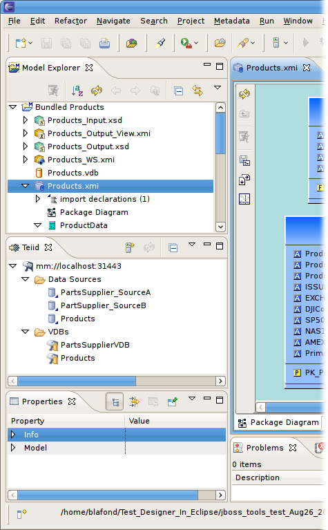
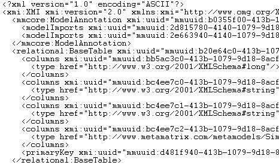

Last revised August 26, 2010
Teiid Designer, which is new to JBoss Tools, is a visual tool that enables rapid, model-driven definition, integration, management and testing of data services without programming using the Teiid runtime framework.
Below is simple introduction to the tool and a summary of a few basic concepts.
For more details on Teiid and Teiid Designer visit: http://www.teiid.org
|
Designer "modeling" Perspective |
The Teiid Designer perspective provides a modeling-centric explorer designed to aid in creating/editing and managing models (XMI/EMF-based) and Virtual Databases (VDBs). When deployed to Teiid server, these VDB's are treated like any other JDBC data source and queried.  If you've been following Teiid Designer since 7.0 development you'll know that the 7.1 version reflects major changes to both Preview Data functionality and VDB editing and VDB execution. These features are now tied to standard application deployment technology through the Teiid Admin API. In Designer, the Teiid view is a window to view the contents of deployed Teiid artifacts, namely Data Sources and Virtual Databases (VDB's). A model is a representation of a set of information constructs. A familiar model is the relational model, which defines tables composed of columns and containing records of data. Another familiar model is the XML model, which defines hierarchical data sets. In Teiid Designer, models are used to define the entities, and relationships between those entities, required to fully define the integration of information sets so that they may be accessed in a uniform manner, using a single API and access protocol. The file extension used for these models is '.xmi' ( Example: NorthwindOracle.xmi ). Below is an example of the partial contents of a model file.  The fundamental models in Teiid Designer define the structural and data characteristics of the information contained in data sources. These are referred to as source models. Teiid uses the information in source models to federate the information in multiple sources, so that from a user's viewpoint these all appear to be in a single source. In addition to source models, Teiid Designer provides the ability to define a variety of view models. These can be used to define a layer of abstraction above the physical (or source) layer, so that information can be presented to end users and consuming applications in business terms rather than as it is physically stored. Views are mapped to sources using transformations between models. These business views can be in a variety of forms:
|
|
The Virtual Database (VDB) |
A VDB, or Virtual Database is a container for your models and pertinent source connection data used by Teiid query engine to access your federated data. Teiid Designer allows you to create and edit VDBs. The VDB is a zip-like file that contains sources and view models, source connection information and index files used at runtime for data identification and a manifest to pull it all together. VDBs contain two primary varieties of model types - source and view. Source models represent the structure and characteristics of physical data sources, whereas view models represent the structure and characteristics of abstract structures you want to expose to your applications. Each source model must contain connectivity information in order for the Teiid engine understand which connection factory/data source instance to connect with. In particular, a "Translator" name and an existing "JNDI" name must be defined. After a VDB is defined, it must be deployed to the Teiid query engine to be accessed. You can select a VDB in your Model Explorer and right-click select "Modeling > Deploy VDB" action or drag the VDB onto an existing server connected in your Teiid view. |
|
Teiid as JDBC Data Source |
Teiid Designer 7.1 offers a JDBC Connection Profile contribution through the DTP extension point. The properties for this connection include standard JDBC inputs including URL, host, port, user-name and password. Through this connection, you can perform standard SQL queries. The nature of Teiid VDB's allows complex, multi-source modeling and data transformation, so you can design views targeted for your front-end applications and simplify or reduce the work necessary to pull all that data together. |
|
Web Services support |
Teiid Designer 7.1 supports generation of deployable web service War Files. For VDB's that contain web service models, there is a contextual menu option to generate a JBossWS-CXF war. This generated war can be deployed to a JBossAS server with CXF enabled. The wizard will ask for a war context name, target namespace, JNDI name for the deployed Teiid VDB, and location to generate the war file. Once deployed, the wsdl can be obtained via http://host:port/warContextName?wsdl |